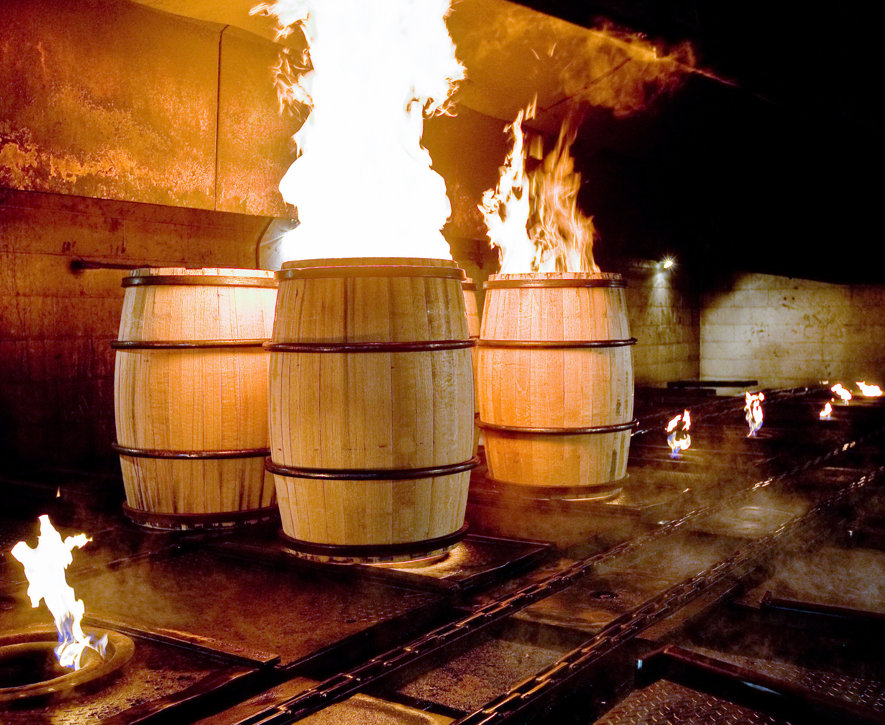
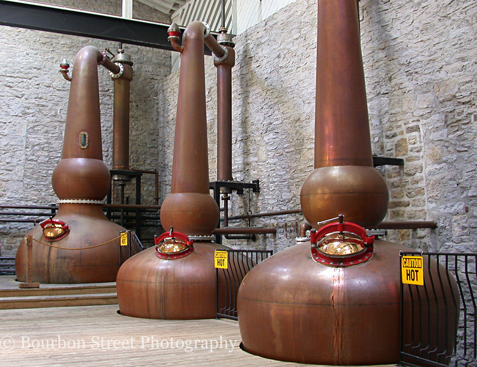

Learn a little...

Bourbon is a type of American whiskey, a barrel-aged distilled liquor made primarily from corn. The name derives from the French Bourbon dynasty, although the precise inspiration is uncertain. Contenders include Bourbon County in Kentucky and Bourbon Street in New Orleans, both of which are named after the dynasty. The name "Bourbon" was not applied until the 1850s, and the Kentucky etymology was not advanced until the 1870s.
Bourbon has been distilled since the 18th century. Although bourbon may be made anywhere in the United States, it is strongly associated with the American South in general, and with Kentucky in particular. As of 2014, distillers' wholesale market revenue for bourbon sold within the US was about $2.7 billion, and bourbon made up about two thirds of the $1.6 billion of U.S. exports of distilled spirits. According to the Distilled Spirits Council of the United States, in 2018 U.S. distillers derived $3.6 billion in revenue from bourbon and Tennessee whiskey (a closely related spirit produced in the state of Tennessee).
 Bourbon was recognized in 1964 by the United States Congress as a "distinctive product of the United States". Bourbon sold in the United States must be produced in the U.S. from at least 51% corn and stored in a new container of charred oak. Rye whiskey is different from bourbon in that it must be produced from at least 51% rye.